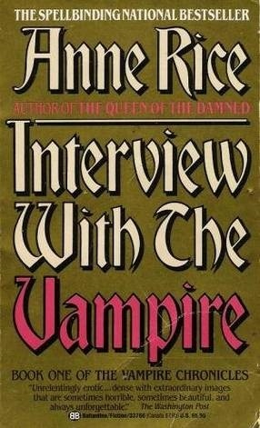
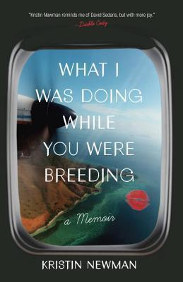

Assignment 4.2: Build a Web Page Exercise - Part 4
Wicked: The Life and Times of the Wicked Witch of the West
(author: Gregory Maguire)
Interview With the Vampire

(author: Anne Rice)
What I Was Doing While you Were Breeding

(author: Kristin Newman)
Back to Landing Page